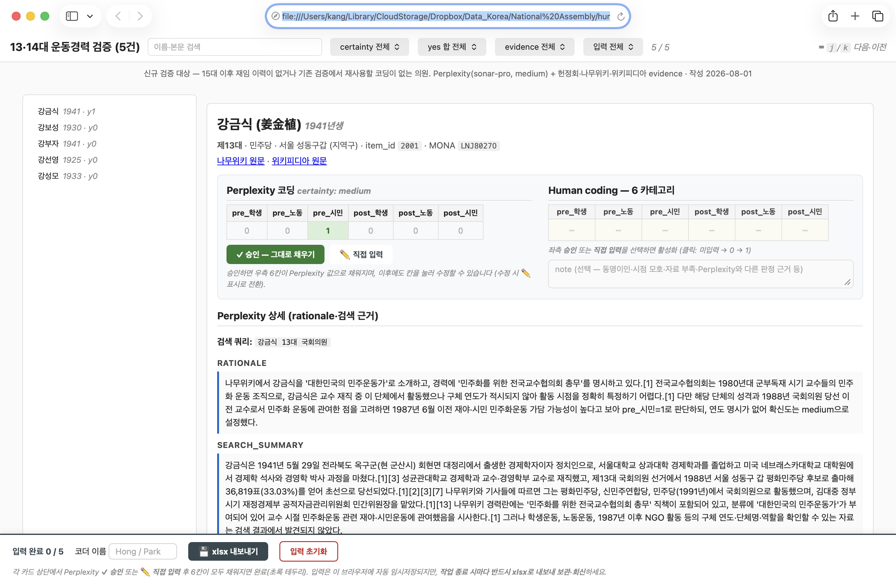

flowchart LR
CB["코드북"] --> D1["① 사람 먼저<br/><i>표본 전량</i>"]
CB --> D2["② LLM + 신뢰도"]
CB --> D3["③ 여러 모델 독립"]
CB --> D4["④ 여러 모델 토의"]
D1 --> H1{{"사람<br/>골든셋"}}
D2 -->|"저신뢰만"| H2{{"사람"}}
D3 -->|"불일치만"| H3{{"사람"}}
D4 -->|"합의 실패만"| H4{{"사람"}}
H1 --> M["성능 추정 가능"]
H2 --> N["자료 생산"]
H3 --> N
H4 --> N
N -.->|"쓸 만한지는<br/>①로만 안다"| M
classDef gate fill:#fff,stroke:#9E1B32,stroke-width:2px
classDef ai fill:#fff,stroke:#6B7280,stroke-dasharray:5 4
class H1,H2,H3,H4 gate
class D2,D3,D4 ai
7장. LLM 텍스트 어노테이션
노트이 장에서 배우는 것
LLM 어노테이션이 어디까지 검증되었고 어디서부터 검증되지 않았는지를 문헌에 근거해 설명할 수 있다
연구자의 코드북을 프롬프트로 옮기고, 옮기는 과정에서 무엇이 새로 필요해지는지 안다
안정성·수렴·타당도를 구분하고, 각각을 어떤 설계로 재는지 안다
인간 코더 간 신뢰도를 기준선으로 삼아 LLM 코딩의 타당도를 판정하고 보고할 수 있다
이 장은 5장에서 만든 평가 하니스의 첫 실전 적용판이다. 새 개념은 최소로 하고, 5장의 부품(골든셋·평가 스크립트·실패 도감)을 국회 법안이라는 실제 자료에 끼우는 경험이 본체가 된다. 5장이 합성 자료로 연습한 것이라면 7장은 실전 자료다.
한 가지 구분을 미리 세워 둔다. 이 장에는 두 종류의 사례가 나온다. 하나는 여러분이 그대로 따라 할 수 있는 관통 사례로, 공개 API로 수집한 법안 자료를 쓴다. 다른 하나는 필자가 실제 연구에서 수행한 실사례(7.7)로, 규모와 비용이 실물이지만 그대로 재현할 수는 없다. 둘을 섞지 않는 것이 이 책의 사실성 원칙을 지키는 방법이다 — 재현 가능한 것과 증언인 것을 구별해서 읽으시라.
7.1 내용분석의 새 국면
정치학의 내용분석은 오랫동안 같은 병목을 지나왔다. 코더를 뽑고, 훈련시키고, 코딩시키고, 불일치를 조정한다. 이 네 단계가 연구비와 시간의 대부분을 먹는다. 의안 1만 건을 네 단계로 분류하겠다는 계획은 그 자체로는 어렵지 않지만, 사람 손으로 하면 학기 하나가 통째로 들어간다.
그래서 2023년 이후의 문헌은 같은 질문을 반복해서 묻고 있다. LLM이 이 병목을 대신할 수 있는가.
7.1.1 세 편이 답한 것
가장 널리 인용되는 답은 6.5.2에서 우리가 이미 한 번 해부했던 논문이다. Gilardi, Alizadeh & Kubli(2023)는 트윗과 뉴스 기사 6,183건을 놓고 ChatGPT·크라우드워커(MTurk)·훈련된 코더를 나란히 세웠다. 결과는 두 갈래였다. 정확도는 ChatGPT가 크라우드워커를 네 데이터셋 평균 약 25%p 앞섰고, 코더 간 일치도는 크라우드워커(56%)만이 아니라 훈련된 코더(79%)까지 넘어섰다(ChatGPT 91%, temperature를 0.2로 낮추면 97%). 건당 비용은 0.003달러 미만으로 MTurk의 약 30분의 1이었다.
이 결과를 어떻게 읽어야 하는지는 6.5.2의 추출 표에 이미 적어 두었다. 여기서 한 가지만 다시 짚는다. 논문 제목의 “outperforms”에는 단서가 붙어 있지 않지만, 본문의 정확도 주장은 “for most tasks”로 한정되어 있다. 일치도에서만 “모든 과제”가 성립한다. 이 구별을 놓치고 “LLM이 사람보다 낫다”로 인용하면 원문을 넘어선 주장이 된다.
두 번째 답은 조금 다른 질문에 대한 것이다. Heseltine & Clemm von Hohenberg(2024)는 “LLM 코딩이 사람 코딩과 얼마나 같은가”를 묻는 대신 “그 차이가 결과를 바꾸는가”를 물었다. 미국 연방의원 트윗 635건과 뉴스 기사 200건, 그리고 칠레·독일·이탈리아 의원 트윗을 전문가와 GPT-4가 각각 네 가지 차원(정치성 여부, 부정성, 감성 3범주, 이념 3범주)으로 코딩했다.
정확도부터 보면 과제에 따라 갈린다. 이진 과제에서는 높았다 — 정치성 분류 88.3%·91.1%, 부정성 94.5%·94.3%(두 번의 GPT-4 실행). 그러나 3범주 과제로 가면 떨어진다: 감성 81.7%·80.6%, 이념 84.7%·85%.
여기서 이 논문이 취한 비교 방식이 우리가 7.6에서 쓸 것과 같다. 인간 코더 간 일치도를 함께 보고한 것이다. 감성 개념에서 사람끼리의 일치도는 87.2%였으므로 GPT-4의 81.7%는 미달이고, 이념에서 사람끼리의 일치도는 85%였으므로 GPT-4의 84.7%는 사실상 동률이다. 같은 “80%대 중반”이라도 하나는 부족이고 하나는 대등하다 — 기준선 없이 정확도만 보면 이 구별이 사라진다.
논문의 이름값은 마지막 절에 있다. 2022년 미국 연방의원 예비선거 후보자 트윗 3,000건을 전문가·GPT-4·혼합 방식으로 각각 코딩하고, 그 자료로 BERTweet 분류기를 따로 훈련시켜 다운스트림 결과를 비교했다. 결론은 “손으로 코딩한 자료로 훈련한 모델과 GPT-4로 코딩한 자료로 훈련한 모델이 거의 동일한 결과를 낸다”는 것이었다.
이 논문의 기여는 판정 기준을 옮긴 데 있다. 코딩이 조금 어긋나더라도 그 어긋남이 회귀계수를 바꾸지 않는다면, 우리가 지켜야 할 것은 일치도 자체가 아니라 결론의 강건성이다. 8장에서 다시 묶는 관점이다.
한 가지 더 눈여겨볼 것이 있다. 이 논문은 GPT-4를 두 번 돌리고 그 둘이 갈린 사례만 사람이 판정하는 ‘혼합’ 방식을 제안하는데, 그렇게 하면 정확도가 정치성 93.4%, 부정성 96.9%, 감성 86.6%, 이념 90.4%로 오른다. 사람이 손대는 양은 전체의 5~13%뿐이다. 7.5에서 우리가 세울 4단 사다리의 ③단계 — 불일치 사례만 사람에게 보내는 층화 검토 — 가 이미 여기에 있다.
세 번째 답은 앞의 둘보다 조심스럽다. Lin & Zhang(2026)은 사회운동 연구를 사례로 LLM 텍스트 분류의 약속과 위험을 함께 점검하면서, 연구자가 취할 수 있는 자리를 둘로 나눈다 — LLM을 주 코더로 쓸 것인가, 코딩 보조로 쓸 것인가. 이 구분은 기술적이라기보다 책임의 문제다. 주 코더로 쓰면 산출물의 타당도·신뢰도를 연구자가 입증해야 하고, 보조로 쓰면 최종 판단이 사람에게 남는다. 어느 쪽이든 타당도와 신뢰도를 체계적으로 검사하고 보고하라는 것이 이 논문의 처방이다.
7.1.2 그러나 균형을 잡아야 한다
낙관 쪽 근거가 쌓인 만큼 신중 쪽 근거도 분명하다.
첫째, 과제 복잡도에 따라 편차가 크다. Gilardi의 결과에서 ChatGPT의 정확도는 훈련 코더의 일치도와 정적 상관을 보였다(r = 0.46). 쉬운 과제일수록 잘한다는 뜻이다. 뒤집으면, 사람도 헷갈리는 과제에서는 LLM도 헷갈린다. 7.7에서 우리는 이 관계를 필자의 자료에서 다시 만나게 되는데, 그 형태가 놀랍도록 선명하다.
둘째, 이론적 구성개념은 감성 분류보다 어렵다. “이 문장은 긍정인가 부정인가”는 상식으로 답할 수 있지만, “이 법안은 젠더 의안인가”는 연구자가 정의한 개념에 달려 있다. 개념이 연구자의 것인 이상, 그것을 모델에게 전달하는 일 — 즉 코드북을 프롬프트로 옮기는 일 — 이 성능의 절반을 결정한다. 7.3이 그 작업이다.
셋째, 그리고 이 장 전체를 관통하는 것: 어떤 성능 수치도 여러분의 과제에 대한 보증이 아니다. 위 세 편은 각자의 과제에서 각자의 자료로 얻은 결과다. 여러분의 코드북, 여러분의 언어, 여러분의 텍스트에서 같은 수치가 나온다는 보장은 없다. 그래서 이 장의 무게중심은 7.1이 아니라 7.6(타당화)에 있다. 문헌은 “가능하다”까지만 말해 주고, “내 과제에서 되는가”는 여러분이 재야 한다.
📦 박스 7-1. 낙관과 신중 사이에서 문장을 고르는 법
이 장의 문헌을 인용할 때 흔히 나오는 세 가지 과장이 있다. 원문을 넘어서지 않는 표현을 나란히 적어 둔다.
과장된 서술 원문이 지지하는 서술 “LLM이 인간 코더를 능가한다” “일치도에서는 훈련 코더를 상회했고, 정확도에서는 대부분의 과제에서 크라우드워커를 상회했다” “LLM 코딩은 사람 코딩과 같다” “코딩 불일치가 있었으나 다운스트림 분석 결과는 실질적으로 동일했다(해당 과제·자료에서)” “검증 없이 써도 된다” “주 코더로 쓰든 보조로 쓰든 타당도·신뢰도를 검사하고 보고해야 한다” 오른쪽 문장들이 길고 답답해 보인다면, 그것이 정확히 이 문헌들이 말한 만큼이다. 5장에서 배운 대로, 성능 주장은 측정 조건과 함께 붙어 다닐 때만 의미가 있다.
7.2 관통 사례 개시: 국회 법안 데이터 만들기
7.2.1 왜 법안인가
교재의 관통 사례가 갖춰야 할 조건이 넷이다. 공개적으로 접근 가능하고, 규모가 있고, 정치학적으로 실질적인 질문이 걸려 있고, 텍스트가 어노테이션하기에 적당히 어려울 것.
국회 법안은 넷을 모두 만족한다. 의안정보시스템과 열린국회정보 Open API로 누구나 수집할 수 있고, 한 대(代) 국회에서 2만 건이 발의되며(22대는 이 글을 쓰는 시점에 20,084건), “누가 어떤 의제를 입법으로 밀어붙이는가”라는 대의(representation)의 핵심 질문이 걸려 있고, 제안이유·주요내용이라는 반구조화된 텍스트는 짧지도 길지도 않다.
📦 박스 7-2. 법안이라는 텍스트의 특수성
법안 텍스트는 어노테이션 재료로서 세 가지 특성이 있고, 각각이 파이프라인 설계에 영향을 준다.
첫째, 정형 관용구의 바다다. “현행법은 ~하고 있으나 ~한 문제가 있어 이를 개선하려는 것임” — 거의 모든 제안이유가 같은 틀을 쓴다. 관용구는 분류의 신호를 희석하므로, 판단 근거를 틀이 아니라 틀 안의 내용어에서 찾도록 프롬프트에 명시해야 한다.
둘째, 일부개정안의 맥락 의존성. “제3조제2항 중 ’5년’을 ’3년’으로 한다”는 개정문만으로는 무엇에 관한 법안인지 알 수 없다. 제안이유를 반드시 함께 넣어야 하고, 그래도 모호하면 법률명이 최후의 단서다. 7.3에서 볼 프롬프트가 “의안명만으로 판단하지 말 것”을 첫 번째 판정 원칙으로 못 박은 이유가 이것이다.
셋째, 의례적 발의의 존재. 자구 수정, 일괄 정비, 위원장 대안 등 실질 내용이 얇은 법안이 상당수라, “해당 없음” 범주의 설계가 다른 자료보다 중요하다.
세 특성 모두 같은 교훈을 가리킨다 — 코드북을 자료보다 먼저 확정할 수 없다. 자료를 읽으면서 코드북이 자란다는 내용분석의 오랜 경험칙이 여기서도 성립한다.
7.2.2 수집과 그 검증
수집 경로는 열린국회정보(open.assembly.go.kr)가 기본이고, 의안정보시스템 웹 화면은 검증·보완용이다. 포털에서 인증키를 발급받은 뒤, 의안검색 API를 대수별로 호출한다.
호출 형식은 이렇다. 엔드포인트가 https://open.assembly.go.kr/portal/openapi/{API_ID}이고, 의안검색의 ID는 TVBPMBILL11, 필수 파라미터는 대수를 뜻하는 AGE다. 공통 파라미터로 인증키 KEY, 페이지 번호 pIndex, 한 페이지 건수 pSize가 있다.
직접 불러 보자. 22대 국회 의안을 100건 요청한다.
curl -A "Mozilla/5.0" \
"https://open.assembly.go.kr/portal/openapi/TVBPMBILL11?Type=json&AGE=22&pIndex=1&pSize=100"여기서 멈춰서 이 출력을 노려보아야 한다. 응답 코드는 INFO-000, 메시지는 “정상 처리되었습니다”다. 전체가 20,084건이라는 것도 알려 준다. 그런데 실제로 온 것은 5건이다.
인증키를 빠뜨렸기 때문이다. 그런데 이 API는 그것을 오류로 알리지 않는다. 성공이라고 말하면서 5건만 준다. 키를 넣고 같은 요청을 보내면 이렇게 바뀐다.
두 출력에서 다른 것은 마지막 줄뿐이다. RESULT도 총건수도 같다. 만약 여러분이 list_total_count만 확인하고 넘어갔다면, 5건짜리 자료로 나머지 분석을 다 했을 것이다. 컬럼 목록도 지면에 맞게 뒤를 줄였다 — 실제로는 24개가 온다.
이것이 이 장에서 수집 검증을 따로 요구하는 이유다. 5장에서 “실패를 조용히 삼키지 말라”고 했는데, 남의 API는 우리 사정을 봐주지 않는다. 조용한 실패를 우리 쪽에서 시끄럽게 만들어야 한다.
세 가지를 덧붙인다. 첫째, pSize의 기본값도 5이므로 명시하지 않으면 역시 조금만 받는다. 둘째, User-Agent 헤더가 없으면 Bad Request. 한 줄만 돌아온다 — 필자도 이 벽에 한 번 부딪혔다. 셋째, 마지막 페이지를 지나치면 INFO-200(해당 데이터 없음)이 오는데 이것은 오류가 아니라 정상 응답이므로, 반복문의 종료 조건으로 쓰기에 적합하다.
이제 페이지네이션을 붙여 실제로 여러 쪽을 받아 본다.
네 페이지에서 멈춘 것은 시연이기 때문이다. 끝까지 돌리면 20,084건이 온다. 마지막 줄의 예시 하나가 이 자료의 성격을 잘 보여 준다 — 법률명, 발의자 목록, 발의일. 박스 7-2가 말한 “제안이유를 반드시 함께 넣어야 한다”는 제약도 여기서 확인된다. 이 목록 API는 본문을 주지 않으므로, 제안이유·주요내용은 의안별 상세 조회로 따로 받아야 한다.
소관위 분포가 눈에 띈다면 잘 보신 것이다. 이것이 7.2.3에서 말할 ’느슨한 정답’의 재료다.
API 사양은 개정되므로 위 내용은 이 글을 쓰는 시점의 것이다. 포털의 전체 API 목록(OPENSRVAPI)으로 현재 사양을 확인하는 습관을 들이시라.
💻 따라 하기: 포털에서 인증키를 발급받아 위 두 호출을 직접 해 보라. 키를 뺀 호출과 넣은 호출의 응답을 나란히 놓고, 무엇이 같고 무엇이 다른지 한 줄로 적어 보라. 그 한 줄이 여러분이 앞으로 남의 API를 쓸 때마다 확인할 항목이다.
수집 코드에 반드시 들어가야 할 것은 셋이다. 페이지네이션(pIndex를 올리며 INFO-200이 올 때까지), 재시도(공공 API는 간헐적으로 실패한다), 그리고 요청 간격이다. 마지막 것은 기술이 아니라 예절이다. 공개된 자원을 쓰는 이상 상대 서버를 배려하는 것이 연구자의 몫이다.
인증키는 코드에 적지 않는다. .env 같은 파일에 두고 그 파일을 .gitignore에 넣는다 — 1장에서 배운 그대로다. 공개 저장소에 API 키가 올라가는 사고는 흔하고, 한 번 올라가면 이력에서 지우기가 번거롭다.
여기까지 읽고 “그러면 이 스크립트도 에이전트에게 시키면 되지 않나”라고 생각했다면 맞다. 실제로 위 수집 코드는 필자가 한 줄씩 친 것이 아니라 에이전트에게 시켜 얻은 것이다. 3장의 어휘로 말하면 이것은 바이브 코딩이 잘 통하는 종류의 일이다 — 요구가 명확하고(“이 API에서 대수별로 전량 받아 CSV로”), 성공 여부를 즉시 확인할 수 있으며, 틀려도 되돌리기 쉽다.
다만 3.3.2에서 세운 단서가 여기서도 그대로다. 구현 확인은 반드시 사람이 한다. 이 과제에서 확인해야 할 것은 셋이다.
- 종료 조건: 반복문이
INFO-200에서 멈추는가, 아니면 페이지 수를 어딘가에 박아 두었는가. 후자면 자료가 늘었을 때 조용히 잘린다. - 요청 간격: 넣었는가. 에이전트는 이것을 자주 빠뜨린다 — 자기가 예절을 지킬 이유가 없기 때문이다.
- 실패 처리: 한 페이지가 실패했을 때 그 사실이 어디엔가 남는가, 아니면
except: pass로 삼켜지는가.
에이전트에게 코드를 시키는 것과 검증을 시키는 것은 다르다. 검증을 시키면 지금 만든 코드를 스스로 통과시키는 검사를 만들 위험이 있다 — 5장에서 “검증되지 않은 검증은 검증이 아니다”라고 했던 그 자리다. 검사의 기준은 사람이 정하고(공식 통계와 대조한다), 그 기준을 코드로 옮기는 일만 시키는 것이 안전하다.
그리고 여기에 이 책이 강조하는 한 가지를 더한다. 수집 자체를 검증한다.
회기별로 몇 건을 받았는지 세어 국회가 공개한 공식 통계와 대조하는 것이다. 이 검사는 싱겁지만, 통과하지 못하면 뒤의 모든 분석이 무의미해진다. 페이지네이션이 중간에 끊겼거나 필터가 잘못 걸렸을 때 그 사실은 조용히 숨는다 — 자료는 여전히 그럴듯한 모양을 하고 있기 때문이다. 5장의 언어로 말하면, 수집 단계에도 게이트가 필요하다.
이 과제에서는 대조할 기준이 응답 안에 이미 들어 있다. list_total_count가 20,084이라고 알려 주므로, 받은 행 수가 그 숫자와 같은지 세면 된다. 앞의 두 실행 결과가 정확히 이 검사에 걸린 사례였다 — 총건수는 20,084인데 받은 것은 5건이었다.
7.2.3 분류 과제를 두 층으로 설계한다
이 관통 사례의 분류 과제는 두 층이다. 난이도의 사다리이자, 이진 분류와 다범주 분류를 모두 경험하게 하는 장치다.
1층 — 젠더 관련성(서열 4단계). 이 법안이 젠더 이슈와 얼마나 관련되는가.
먼저 왜 이것을 세는가부터 답해 두자. 실습을 위한 임의의 과제가 아니기 때문이다.
여성 의원 비율이 늘면 여성 관련 입법이 늘어나는가 — 대표성 연구의 오래된 질문이고, 흔히 실질적 대표(substantive representation)의 문제로 불린다. 이 질문에 답하려면 “여성 관련 입법”을 셀 수 있어야 하는데, 그 세기가 만만치 않다. 한 대 국회에 2만 건이 발의되고, 그 대부분은 도로법이나 세제 개편처럼 젠더와 무관하다. 명백한 젠더 의안 — 여성 정치 대표성 확대, 성폭력 처벌 강화 — 은 오히려 소수다.
문제는 그 사이의 회색 지대다. 보육 정책은 본문에 ’여성’이라는 단어가 한 번도 안 나오지만 결과적으로 여성의 노동참여와 돌봄 부담에 영향을 준다. 이것을 젠더 입법으로 셀 것인가?
여기서 측정이 곧 이론적 선택이 된다. 회색 지대를 빼고 세면 여성 의원의 기여가 과소평가되고, 넣고 세면 “젠더 입법”이 복지 일반으로 번져 개념이 흐려진다. 4단계 척도는 그 양자택일을 피하려는 장치다 — 회색 지대를 지우는 대신 별도 등급으로 세운다. 그러면 분석 단계에서 “0 대 나머지”로 볼지 “0·1 대 2·3”으로 볼지를 연구 질문에 따라 고를 수 있고, 그 선택이 결과를 얼마나 바꾸는지도 볼 수 있다.
7.7.4에서 2·3을 합치면 일치도가 오르는 것을 보게 되는데, 그때 “지표가 오르니 합치자”는 유혹이 왜 위험한지도 여기서 나온다. 2와 3의 구별은 측정의 편의가 아니라 이 연구가 묻는 질문 자체이기 때문이다.
경계 사례가 풍부하다는 점은 교재로서도 좋다. 육아휴직 확대는? 병역법은? 파산 결격조항을 정비하는 여성가족위원회 소관 법률은? 이 층이 7.3 이후 이 장 전체를 끌고 간다.
2층 — 정책 분야 분류(다범주). 여기에는 묘미가 하나 있다. 소관위원회를 ’느슨한 정답’으로 쓸 수 있다. 법안마다 소관위가 이미 붙어 있으니 공짜 라벨이 있는 셈이다.
그러나 공짜에는 값이 있다. 소관위는 분야의 대리 지표일 뿐 완벽하지 않다 — 복합 법안은 하나의 위원회로 귀속되지 않고, 위원회 관할에는 정치적·역사적 자의성이 있다. 그래서 이 과제에는 좋은 방법론 토론이 내장되어 있다. 행정 분류를 골든셋으로 써도 되는가? 답은 “쓰되 그것이 무엇인지 알고 쓰라”이고, 소관위와 인간 코딩의 불일치율 자체가 하나의 연구 결과가 된다.
7.3 코드북에서 프롬프트로
7.3.1 좋은 코드북의 조건이 곧 좋은 프롬프트의 조건
내용분석의 코드북은 사람 코더를 위한 문서다. 정의가 있고, 포함·배제 기준이 있고, 경계 사례가 있고, 예시가 있다. 그런데 이 네 가지는 프롬프트에 필요한 것과 정확히 같다. 좋은 코드북을 가진 연구자는 이미 좋은 프롬프트의 재료를 가지고 있다.
이 절에서는 필자가 실제로 쓴 코드북 하나를 열어 해부한다. 과제는 단순하다. 국회에 제출된 의안 텍스트를 읽어, 그 의안이 젠더(성별·여성·가족·돌봄 등)와 얼마나 직접적으로 관련되는지를 0~3의 네 단계로 코딩한다. 한국 정치 연구에서 법안·의제는 흔히 소관 상임위원회나 키워드로 대충 묶이지만, 위원회 분류는 행정 편의의 산물이고 키워드는 경계 사례를 놓친다. 필자가 속한 연구 흐름에서는 의안의 내용 자체를 서열 척도로 읽어 후속 분석(의제 설정, 대표성, 정책 효과)의 입력으로 쓰려 했고, 그 측정을 사람 코더만으로 전수 수행하기에는 규모와 비용이 부담이었다. 그래서 인간 기준선(골든셋)을 먼저 만들고 LLM을 네 번째 코더 후보로 올리는 설계가 선택됐다.
자료와 검증 산출물은 두 갈래로 실재한다. 하나는 인간 검증용 골든셋과 코드북·조정 기록이 있는 작업 폴더(human_validation 계열)이고, 다른 하나는 동일 과제에 서로 다른 계열 모델을 교차해 돌린 분류 실행 폴더다. 이 장 본문의 수치(인간 κ, LLM–RA 일치, 혼동행렬, 이종 모델 교차)는 그 원자료에서 다시 집계한 것이다. 학습용으로 공개 저장소에 두는 연습 표본과 이 실측 수치를 같은 표로 읽지 말라. 과제 문법(코드북 → 프롬프트 → 골든셋 → 하니스)만 공유한다. 전모는 7.5~7.7에서 본다.
먼저 척도부터 보자.
네 줄짜리 표지만 여기에는 이미 중요한 설계 결정이 들어 있다. 이 척도는 명목형이 아니라 서열형이다. 0에서 3으로 갈수록 젠더 관련성이 강해진다. 서열형이라는 사실이 뒤에서 두 번 일한다 — 오류를 “인접 1단계”와 “2단계 이상”으로 나눠 볼 수 있게 하고(7.5), 필요하면 인접 범주를 합쳐 재분석할 수 있게 한다(7.4).
7.3.2 정의만으로는 코딩이 안 된다
코드북의 각 레벨에는 한 줄 정의가 붙어 있지만, 실제 코딩은 그 정의로 되지 않는다. 예컨대 Level 1의 정의는 이렇다.
정의 아래에 판정과 이유가 붙은 실제 사례가 오는 것을 보라. 코더가 실제로 참조하는 것은 정의가 아니라 이 사례들이다. “한부모가족은 결과적 젠더 영향이지만 성중립적 표현이므로 Level 1”이라는 판단은 정의에서 연역되지 않는다. 누군가 한 번 결정해서 적어 놓아야 다음 코더가 따라올 수 있다.
그리고 바로 이것이 프롬프트로 옮겨야 할 것이다. 정의만 넣은 프롬프트와 사례까지 넣은 프롬프트는 다른 결과를 낸다. few-shot이 zero-shot보다 나은 경우가 있다는 말은 대개 이 뜻이다 — 예시가 정보를 나르는 것이 아니라, 연구자가 이미 내린 경계 판정을 나른다.
옮긴 결과가 어떻게 생겼는지 실물로 보자. 위 코드북 사례와 같은 영역을 다루는 프롬프트의 대목이다.
코드북의 산문 사례가 프롬프트에서는 입력–출력 쌍으로 바뀌었다. 판정 이유가 사라진 것이 아니라 rationale 필드로 자리를 옮겼고, 코더가 읽던 설명이 모델이 흉내 낼 출력 형식이 되었다. 이것이 코드북–프롬프트 변환의 기본 동작이다.
한 걸음 더 나아간 것이 경계 예시다. 이 프롬프트에는 “이렇게 판정하라”는 예시만이 아니라 “이렇게 판정하지 말라”는 예시가 따로 묶여 있다.
각 예시의 제목에 어느 방향으로 틀리기 쉬운지가 적혀 있는 것을 보라(“Level 3로 과대분류 주의”). 키워드 매칭으로 분류하면 “가족”·“남녀”·“가정폭력” 같은 단어에 걸려 넘어질 것이고, 이 예시들은 정확히 그 함정에 미리 말뚝을 박아 둔 것이다. 좋은 코드북이 자주 틀리는 패턴을 따로 한 절로 묶어 두는 것과 같은 이유다.
7.3.3 코드북의 절반은 경계 규칙이다
이 코드북에서 가장 긴 장은 정의가 아니라 §4 “경계 케이스 결정 규칙”이고, 문서 스스로 “가장 중요한 챕터”라고 적고 있다. 경계는 일곱 개로 나뉘어 있으며, 그중 둘에는 경고 표시가 붙어 있다.
여기서 두 가지를 짚는다.
첫째, 경계 규칙은 정의의 보충이 아니라 정의가 실패하는 지점의 목록이다. “성별을 다룬다”와 “성평등을 시정한다”의 차이는 사전적으로 정의될 수 없고, 사례의 나열로만 전달된다. 코드북이 길어지는 것은 저자가 장황해서가 아니라 개념이 그만큼 미세하기 때문이다.
둘째, 이 코드북에는 개정 이력이 박혀 있다. 문서 머리에 “최근수정: 2026-05-30(§4 경계 ③ 보강 규칙 + 경계 ⑦ 코딩 단위 추가 — PI 3-way 판정 반영)”이라고 적혀 있고, 경계 ③ 아래에는 이런 표가 덧붙어 있다.
이 표는 코딩이 끝난 뒤에 코드북으로 되돌아온 것이다. 세 코더가 모두 다른 답을 낸 사례를 필자가 판정하면서, 그 판정을 다음 회차의 규칙으로 승격시켰다. 3장에서 스킬을 “절차의 코드화”라고 불렀던 것이 여기서는 판정의 코드화로 나타난다. 코드북은 코딩 전에 완성되는 문서가 아니라 코딩과 함께 자라는 문서다.
7.3.4 프롬프트로 옮길 때 새로 생기는 것
코드북을 프롬프트로 옮기면 사람 코더에게는 없던 문제가 셋 생긴다.
① 출력이 구조화되어야 한다. 사람은 엑셀 칸에 숫자를 적지만, 모델은 문장을 뱉는다. 그래서 출력 형식을 강제한다 — JSON 스키마를 주고 그 형식으로만 답하게 하는 것이 표준이다. 아래는 이 과제에서 실제로 돌아온 응답 하나다.
한 줄씩 짚어 보자. level이 판정이고, trigger_terms가 비어 있는 것은 젠더 판정의 근거가 된 단어가 없었다는 뜻이다. domain은 정책 영역, confidence는 모델의 자기 신고다. rationale이 흥미롭다 — “여성가족위원회 소관”이라는 걸림돌을 스스로 언급하고 기각했다. 소관 위원회 이름에 ’여성’이 들어가지만 개정 내용은 파산 결격조항 정비이므로 Level 0이라는 것이다. 박스 7-2가 말한 “일부개정안의 맥락 의존성”이 실제로 문제가 된 사례이고, 프롬프트의 첫 판정 원칙(“의안명만으로 판단하지 말 것”)이 작동한 자리다.
rationale이 지면에서 한 줄로 이어지는 것은 실제 응답이 그렇기 때문이다. 읽기 편하게 끊지 않았다.
② 근거를 함께 받을 것인가. 라벨만 받을 수도 있고, 라벨과 함께 판정 이유(rationale)를 받을 수도 있다. 필자는 받는 쪽을 택했는데, 이유가 있다. 7.7.4에서 사람과 기계의 불일치를 검토할 때, 이유가 없으면 왜 갈렸는지 알 수 없어 코드북을 고칠 수 없다. 비용은 토큰이 늘어나는 것이고, 이득은 오류 분석이 가능해지는 것이다. 대량 배치에서는 이 비용이 무시할 수 없으므로, 전량이 아니라 표본에만 이유를 요구하는 절충도 가능하다.
한 가지 주의를 붙여 둔다. 모델이 적어 내는 이유는 판단의 재구성이지 판단의 기록이 아니다. 사람이 사후에 대는 이유와 마찬가지로, 그럴듯하지만 실제 계산 과정과는 다를 수 있다. 이유를 읽는 목적은 모델의 내부를 들여다보는 것이 아니라 코드북의 어느 대목이 오해되고 있는지 단서를 얻는 것이다.
③ “판단 불가”를 허용할 것인가. 사람 코더에게는 “모르겠다”를 적을 칸을 주는 것이 보통이지만, 모델에게 그 선택지를 주면 남용할 위험이 있고, 주지 않으면 억지로 고르게 만드는 편향이 생긴다. 필자의 파이프라인이 택한 길은 제3의 방식이다 — 범주는 강제하되 신뢰도를 함께 받는다. 모델은 항상 0~3 중 하나를 고르지만, 얼마나 확신하는지를 confidence로 신고한다. 이 설계가 7.7에서 뜻밖의 값을 하게 된다.
이 셋을 반영한 출력 지시는 이렇게 생겼다.
trigger_terms가 눈에 띈다. 판정에 쓰인 키워드를 함께 받아 두면, 나중에 오류를 분석할 때 모델이 무엇을 보고 그렇게 판정했는지를 라벨과 나란히 놓고 볼 수 있다. rationale이 서술이라면 trigger_terms는 색인이다.
7.3.5 옮기면서 갈라진다
프롬프트는 코드북의 번역본이지만, 번역본은 원본과 따로 자란다. 필자의 두 문서를 나란히 놓았을 때 실제로 그런 일이 있었다.
Level 2와 Level 3을 가르는 기준을 두 문서는 이렇게 적고 있다.
두 기준이 같지 않다. 프롬프트는 쟁점성(여야가 합의할 사안인가)을 묻고, 코드북은 본질(평등 시정이 의안의 목적인가)을 묻는다. 겹치는 사례가 많지만 갈리는 사례도 있다 — 정파 대립 없이 조용히 통과되는 성평등 시정 법안이라면 코드북으로는 Level 3, 프롬프트로는 Level 2에 가깝다.
두 문서의 작성 시점은 프롬프트가 2026년 4월 23일, 코드북이 5월 9일(5월 30일 개정)이다. 프롬프트가 먼저 있었고 코드북이 나중에 자랐다. 그 사이 프롬프트는 갱신되지 않았다.
여기서 인과를 단정하지는 않겠다. 이 불일치가 7.7에서 볼 2↔︎3 경계의 낮은 일치도를 얼마나 설명하는지는 별도의 실험으로만 답할 수 있는 문제이고, 필자는 그 실험을 하지 않았다. 다만 확실한 것 하나는 말할 수 있다.
사람용 문서와 기계용 문서가 갈라지면, 그 뒤에 계산하는 인간–기계 일치도는 두 가지를 한꺼번에 재게 된다 — 모델의 능력과 두 문서의 간격을.
이 간격이 실제로 무엇을 앗아갔는지는 박스 7-5에서 다시 다룬다. 여기서는 현상만 기록해 둔다 — 번역본은 원본과 따로 자란다.
💻 따라 하기: 자기 분야의 코드북(없다면 논문의 방법 절)에서 범주 하나를 골라, ① 정의 ② 포함·배제 기준 ③ 경계 사례 ④ 예시의 네 항목으로 다시 써 보라. 넷 중 무엇이 비어 있는지가 여러분 코드북의 약한 고리다. 대개 ③이 비어 있다.
7.4 파이프라인 설계 선택지
코드북이 프롬프트가 되었다면, 다음은 그것을 무엇으로 어떻게 돌릴 것인가다.
7.4.1 만능 조합은 없다
선택지를 요인으로 늘어놓으면 이렇게 된다 — 모델 종류 × 모델 크기 × zero/few-shot × 프롬프트 스타일(표준·페르소나·사고연쇄). 조합이 수십 가지이므로 “무엇이 최선인가”를 묻고 싶어지지만, 문헌의 답은 그 질문 자체를 되돌려준다.
McLaren과 동료들(2026)이 이 질문을 정면으로 다뤘다. 이 연구가 특별한 것은 비교를 통제했다는 점이다. 기존 연구 대부분은 모델 하나 또는 설정 하나를 시험하는데, 그러면 “이 모델이 좋다”가 정말 모델 덕인지 그 모델에 맞춰 다듬은 프롬프트 덕인지 알 수 없다. 이들은 공개 가중치 모델 여섯을 정치학 어노테이션 과제 넷에 붙이되 양자화·하드웨어·프롬프트 템플릿을 동일하게 고정했다. 조건을 묶어 놓고 요인만 흔든 것이다.
핵심 결론은 방법론적이다. 상호작용 효과가 주효과를 압도한다. 어떤 모델이 좋은지가 프롬프트 스타일에 달려 있고, 어떤 프롬프트가 좋은지가 과제에 달려 있다. 어느 모델도, 어느 프롬프트 스타일도, 어느 학습 방식도 일률적으로 우월하지 않았고 최고 성능 모델이 과제마다 달랐다.
저자들이 여기에 붙인 표현이 정치학자에게는 특히 뼈아프다 — 이 설정들이 “연구자 자유도(researcher degrees of freedom)”가 된다는 것이다. 그럴듯해 보이는 파이프라인 결정 하나하나가, 결과를 원하는 방향으로 미는 손잡이가 될 수 있다는 뜻이다. p-해킹 논의에서 익숙한 그 개념이 어노테이션 파이프라인으로 옮겨 온 셈이다.
따름정리 둘도 실무에 곧바로 쓰인다. 첫째, 모델 크기는 비용에도 성능에도 믿을 만한 안내가 아니다. 계열 간 효율 차이가 워낙 커서 어떤 큰 모델이 훨씬 작은 모델보다 자원을 덜 쓰기도 하고, 같은 계열 안에서는 중간 크기가 최상위와 맞먹거나 낫기도 했다. 둘째, 널리 권장되는 프롬프트 기법이 일관되지 않고 때로는 성능을 떨어뜨렸다.
논문의 처방은 “무엇이 최선인가”의 목록이 아니라 검증 우선 프레임워크다 — 파이프라인 결정에 원칙적인 순서를 두고, 프롬프트를 동결한 뒤 떼어 둔 세트에서 평가하며, 보고 표준을 지키라는 것. 앞의 두 항목이 익숙하게 들린다면 맞다. 5장의 dev/final 분리이고, 7.7.3에서 필자가 지키지 못했다고 고백할 바로 그것이다.
실무적 함의는 단순하고 조금 김빠진다. 여러분의 과제에서 몇 가지 조합을 실제로 돌려 비교하는 것 외에 지름길이 없다. 다만 이것은 5장에서 이미 배운 일이다. 조합 비교는 평가 하니스가 하는 일이고, 골든셋만 있으면 하룻밤에 돌릴 수 있다.
7.4.2 상용 API인가 공개 모델인가
두 번째 축은 어디서 돌릴 것인가다. 판단 기준은 넷이다.
비용. 상용 API는 건당 과금이므로 규모가 커지면 선형으로 늘고, 공개 모델은 장비와 시간이 든다. 다만 분류 과제에서 상용 API의 소형 모델은 대단히 싸다 — Gilardi의 건당 0.003달러가 그 수준이다.
재현가능성. 상용 모델은 어느 날 갱신되고 구 버전이 사라진다. 1년 뒤 심사자가 재현을 요구하면 곤란해질 수 있다. 모델 버전을 문자열까지 기록해 두는 것이 최소한의 방어다.
무엇을 어떻게 남기는지 실물로 보자. 필자의 파이프라인이 실행 때마다 떨어뜨리는 기록이다.
다섯 줄이지만 재현에 필요한 것이 다 들어 있다. model은 claude-sonnet이 아니라 claude-sonnet-4-6까지 적혀 있다 — 이것이 “문자열까지”의 뜻이다. n과 conds가 무엇을 몇 건에 대해 돌렸는지 말해 주고(250건 × 프롬프트 3종), ts가 시점을 못 박는다. batch_id는 공급자 쪽에 남은 실행 기록을 나중에 다시 찾을 수 있는 열쇠다.
버전 표기의 함정도 있다. 코드에 model="gpt-5-mini"처럼 별칭을 적어 두면, 공급자가 그 별칭이 가리키는 실체를 바꿔도 코드는 그대로다. 별칭은 편하지만 재현을 보장하지 않는다. 날짜가 박힌 정식 이름을 쓸 수 있으면 그쪽이 안전하고, 별칭을 썼다면 실행 시점을 반드시 함께 남긴다 — 그것이 별칭을 실체로 되돌리는 유일한 단서다.
한 가지 더. 이 기록은 자료 옆이 아니라 자료와 함께 있어야 한다. 산출 CSV만 남기고 실행 기록을 지우면, 6개월 뒤 그 CSV가 어느 모델의 산물인지 아무도 모른다. 1장의 원칙 — 지워도 스크립트로 복원되는 상태 — 이 여기서는 “산출물만 보고도 어떻게 만들었는지 알 수 있는 상태”로 나타난다.
데이터 보호. IRB 제약 자료나 미공개 원자료를 외부 API로 보내는 것은 그 자체로 검토 사항이다(8장). 공개 모델을 로컬에서 돌리면 이 문제가 사라진다.
“로컬에서 돌린다”가 무슨 뜻인지 짚어 두자. 상용 API를 쓸 때 여러분의 텍스트는 인터넷을 건너 남의 서버로 갔다가 결과만 돌아온다. 모델은 그쪽에 있고 여러분은 문을 두드릴 뿐이다. 공개 가중치 모델은 그 문 안쪽의 것 — 모델 파일 자체 — 을 내려받아 여러분 컴퓨터에서 실행한다. 텍스트가 기계 밖으로 나가지 않는다.
차이를 표로 놓으면 이렇다.
| 상용 API | 로컬 공개 모델 | |
|---|---|---|
| 텍스트가 가는 곳 | 공급자 서버 | 내 기계 안 |
| 비용 구조 | 건당 과금 (규모에 비례) | 장비 + 전기 + 시간 (고정에 가까움) |
| 버전 | 공급자가 바꾼다 | 내가 받은 파일 그대로 |
| 성능 | 대체로 최상위 | 대개 한 단계 아래 |
| 손이 가는 정도 | 키 발급하면 끝 | 설치·설정·자원 관리 |
연구 상황으로 옮기면 판단이 쉬워진다. 공개된 국회 의안을 분류한다면 상용 API가 편하고 싸다 — 어차피 누구나 볼 수 있는 문서다. 반대로 심층면접 전사본이나 익명화 전의 설문 자유응답을 분류한다면 이야기가 다르다. IRB에 “자료를 외부로 전송하지 않는다”고 적어 두었다면 상용 API는 애초에 선택지가 아니고, 로컬 모델이 유일한 길이 된다.
이 글을 쓰는 시점에 개인 장비에서 공개 모델을 돌리는 도구는 여럿 나와 있고 설치도 명령 몇 줄 수준으로 쉬워졌다. 구체적인 도구 이름과 설정은 빨리 낡으므로 실습 저장소에 둔다. 여기서 기억할 것은 선택 기준이다 — 자료가 밖으로 나가도 되는가, 그리고 재현을 몇 년 뒤까지 보장해야 하는가.
파인튜닝. 과제가 고정적이고 물량이 크다면, 소량의 라벨로 공개 모델을 미세조정하는 편이 매번 긴 프롬프트를 태우는 것보다 싸고 안정적일 수 있다. Alizadeh와 동료들(2025)이 이 경로의 실무 지침을 정리해 두었다.
7.4.3 사람을 어디에 둘 것인가 — 네 가지 설계
원리는 이쯤 하고 실제 설계로 간다. 파이프라인을 짤 때 진짜 결정은 “어느 모델을 쓸까”가 아니다. 사람의 시간을 어디에 쓸 것인가다. 사람은 이 파이프라인에서 가장 비싼 부품이고, 그 부품을 어디에 꽂느냐가 설계를 가른다.
네 가지가 있다.
| 설계 | 사람이 하는 일 | 사람이 보는 양 | |
|---|---|---|---|
| ① | 코드북 → 사람이 먼저 코딩 → LLM 코딩 | 골든셋을 만든다 | 정해 놓은 표본 전량 |
| ② | 코드북 → LLM 코딩(신뢰도 포함) → 저신뢰만 사람 | 모델이 애매하다는 것만 본다 | 신뢰도 분포에 달림 |
| ③ | 코드북 → 여러 모델이 각자 코딩 → 불일치만 사람 | 모델들이 갈린 것만 본다 | 불일치율에 달림 |
| ④ | 코드북 → 여러 모델 → 갈리면 서로 토의해 합의 → 합의 실패만 사람 | 합의가 안 된 것만 본다 | 합의 실패율에 달림 |
아래로 갈수록 사람의 부담이 줄고 기계의 구조가 복잡해진다. 그리고 아래로 갈수록 사람이 보는 표본이 편향된다 — 이것이 이 표의 숨은 축이다.
① 사람이 먼저. 가장 고전적이고 가장 비싸다. 그러나 이것만이 편향 없는 골든셋을 준다. 사람이 무작위·층화 표본을 코딩하므로, 거기서 잰 성능은 모집단 성능의 추정치가 된다. 7.6이 통째로 이 설계의 절차서다. 나머지 셋은 성능을 재는 설계가 아니라 자료를 만드는 설계라는 점을 놓치면 안 된다.
② 저신뢰만 사람. 모델의 자기 신고를 라우팅 기준으로 쓴다. 7.7.5에서 볼 대로 신뢰도는 항목의 난이도를 꽤 잘 가리키므로, 이 설계는 합리적이다. 다만 사람이 보는 양이 신뢰도 분포에 좌우된다 — 필자의 젠더 과제에서 층화 표본 200건의 신뢰도 분포는 high 135건(67.5%) / medium 65건(32.5%)이었다. medium 이하를 사람에게 보내면 3분의 1을 사람이 봐야 한다.
③ 불일치만 사람. 계보가 다른 모델 둘 이상을 독립적으로 돌리고, 갈린 것만 사람에게 보낸다. 7.5.3의 Opus×Sonnet 198건에서 불일치는 9건, 4.5%였다. ②의 32.5%와 견주면 인간 부담이 7분의 1이다. 7.1에서 본 Heseltine의 ‘혼합’ 방식이 이 설계이고, 거기서도 사람이 손댄 양은 과제에 따라 4.9~13.4%였다.
싸다고 좋기만 한 것은 아니다. 두 모델이 사이좋게 함께 틀린 것은 이 설계가 영원히 못 잡는다. 4.5%가 32.5%보다 적은 것은 사람이 덜 봐도 된다는 뜻이 아니라 덜 보고 있다는 뜻일 수도 있다. 박스 7-4가 말하는 “일관되게 틀리는 시스템”의 위험이 여기서 비용 절감의 얼굴을 하고 나타난다. 그래서 7.6.1 사다리의 ③단계는 불일치 전수에 더해 일치 사례에서도 무작위 표본을 뽑으라고 요구한다.
④ 모델들이 토의해 합의. 갈렸을 때 사람에게 바로 보내지 않고, 모델들에게 서로의 판정과 근거를 보여 주며 재논의시킨다. 합의가 되면 통과, 끝내 안 되면 사람에게. 이 넷 중 유일하게 진짜 에이전트가 필요한 설계다 — 앞의 셋은 프롬프트 한 번에 답 하나를 받는 단발 호출이지만, 이것은 4장에서 배운 루프(상대의 응답을 읽고 자기 판단을 갱신하는)를 돌려야 하기 때문이다.
매력적이지만 값이 있다. 첫째, 합의가 정답을 뜻하지 않는다. 토의는 수렴시키는 힘이 있어서, 틀린 쪽으로도 수렴한다. 둘째, 합의 과정이 길어지면 비용이 단발 호출의 몇 배가 된다. 셋째, 그리고 방법론적으로 가장 중요한 것 — 토의를 붙이는 순간 모델들의 독립성이 사라진다. ③에서 두 모델의 일치가 증거 가치를 가졌던 이유는 서로를 보지 않았기 때문이다(7.5.3). 서로를 본 뒤의 합의는 준독립 코더의 수렴이 아니라 한 번의 협상 결과다.
정리하면 이렇다. ①은 재기 위한 설계, ②③④는 만들기 위한 설계다. 그리고 ②③④ 중 무엇을 고르든 ①은 따로 필요하다 — 만든 자료가 쓸 만한지는 만든 방식으로 알 수 없기 때문이다.
📦 박스 7-3. 필자의 두 파이프라인은 어느 설계인가
같은 연구실에서 굴리는 두 분류 파이프라인이 서로 다른 설계를 쓴다. 나란히 놓으면 선택의 결과가 보인다.
정책 분야 분류(KMP/CMP) 는 ②의 변형이다. 1차 분류를 상용 API로 돌리고, 산출된 코드가 분류 체계에 실제로 있는지 검사해 없으면 신뢰도를 깎는다. 그렇게 낮아진 항목만 다른 계열 모델로 다시 돌리고, 새 결과의 신뢰도가 더 높으면 교체한다. 저신뢰를 사람이 아니라 두 번째 모델에게 보낸다는 점에서 ②와 ③의 중간이다.
여기에 함정이 하나 있다. 두 결과를 견주는 그
confidence는 모델의 자기 신고 그대로가 아니다. 검사 단계가 손을 댄다 — 체계에 없는 코드면 깎고, 유사 코드로 복구에 성공하면 조금 올린다. 그래서 “2차 모델이 더 확신한다”는 판정에는 모델의 확신과 검사기의 감점이 섞여 있다. 두 모델의 감점 이력이 다르면 비교가 공정하지 않을 수 있다.의안 젠더 분류(이 장의 사례)는 다르다. 전량을 한 모델로 일괄 처리한 뒤, 별도 표본 250건을 뽑아 사람 셋이 코딩했다 — 즉 ①을 사후에 붙인 형태다. 그래서 7.7의 수치가 나올 수 있었다. 대신 사람의 판정이 전량 자료로 되돌아가지는 않았다. 검증은 했으나 교정은 하지 않은 것이다.
두 파이프라인을 섞어 읽지 않도록 적어 둔다. 정책 분야 쪽은 OpenAI와 Gemini를, 젠더 쪽은 Anthropic 모델을 쓴다. 같은 폴더에 들어 있지만 코드도 모델도 공유하지 않는다.
마지막으로 어느 설계를 쓰든 공통으로 지킬 것 하나. 검증 경로가 파이프라인에서 갈라져 나와야 한다. 분류 결과가 곧바로 분석으로 흘러가면 안 된다. 표본이 뽑혀 사람에게 가고, 그 결과가 나오기 전까지 산출물은 아직 자료가 아니다. 7.6이 그 갈라진 가지다.
7.4.4 배치 처리라는 실무
수백 건을 넘어가면 한 건씩 호출하는 방식은 무너진다. 시간도 문제지만 중간에 끊겼을 때 어디까지 했는지 모르는 것이 더 큰 문제다. 실무에서 반드시 갖춰야 할 것은 셋이다.
분할. 전체를 한 번에 던지지 않고 묶음으로 나눈다. 묶음마다 결과를 저장하면 실패의 단위가 전체가 아니라 묶음이 된다.
재시도. API는 실패한다. 일시적 오류와 영구적 오류(형식 파괴 입력, 지나치게 긴 본문)를 구분해, 앞의 것은 다시 시도하고 뒤의 것은 기록에 남기고 넘어간다. 조용히 건너뛰면 나중에 그 결측이 어디서 왔는지 알 수 없다.
중간 저장. 처리한 항목을 즉시 파일로 떨어뜨린다. 1장의 원칙 — 지워도 스크립트로 복원되는 상태 — 이 여기서는 “끊겨도 이어서 돌아가는 상태”로 나타난다.
여기에 하나를 덧붙일 수 있다. 주요 상용 API는 일괄 처리(batch) 모드를 제공하는데, 즉시 응답을 포기하는 대신 값이 크게 싸진다. 대량 분류처럼 몇 시간을 기다려도 되는 작업에는 이쪽이 맞다. 필자도 뒤에 나올 안정성 점검에서 250건 × 프롬프트 3종 = 750건을 이 방식으로 한 번에 던졌다.
7.5 교차 검증 설계: 무엇이 무엇을 측정하는가
실무에서 자주 나오는 질문에서 출발한다. 같은 작업을 서로 다른 모델에 시켜 비교할 것인가, 아니면 같은 모델을 두 번 돌려 비교할 것인가. 답은 “어느 쪽이 낫다”가 아니다. 두 설계는 측정하는 것이 다르므로, 순서를 두고 다른 목적에 쓴다.
7.5.1 질문을 측정론의 언어로 옮기면
인간 코더 연구의 개념 셋을 소환하자. 재검사 신뢰도(같은 코더가 다른 시점에 같은 판정을 하는가), 코더 간 신뢰도(서로 다른 코더가 일치하는가), 그리고 타당도(판정이 실제로 구성개념을 맞히는가). 셋에는 위계가 있다 — 재검사 신뢰도는 코더 간 신뢰도의 전제이고, 앞의 둘은 타당도를 보증하지 않는다.
LLM 비교 설계는 이 셋에 정확히 대응된다.
| 설계 | 인간 코딩의 대응물 | 측정하는 것 | 비용 |
|---|---|---|---|
| B1. 같은 모델·같은 프롬프트 반복 | 같은 코더에게 이틀 뒤 다시 묻기 | 출력 안정성(표집 변동) | 최소 |
| B2. 같은 모델·프롬프트 표현 변형 | 같은 코더에게 지시문만 바꿔 묻기 | 안정성 + 프롬프트 민감성 | 소 |
| A. 이종 모델 교차 | 배경이 다른 두 코더 | 준(準)독립 코더 간 수렴 | 중 |
| 골든셋(인간 코딩) | 훈련된 코더의 합의 | 타당도의 앵커 | 대 |
7.5.2 같은 모델 두 세션의 값과 한계
먼저 분명히 할 것이 있다. 같은 모델의 두 세션은 두 명의 코더가 아니다. 파라미터가 동일하므로, 두 세션의 일치는 “서로 다른 판단 주체가 수렴했다”는 증거가 아니라 “이 모델의 출력이 이 과제에서 안정적이다”라는 증거다. temperature를 0에 가깝게 두면 일치율은 거의 1로 수렴하는데, 이는 정보가 아니라 동어반복이다. 체계적 편향 — 예컨대 육아휴직 법안을 일관되게 젠더 무관으로 찍는 오류 — 은 두 세션이 완벽히 공유하므로, 세션 간 비교로는 영원히 발견되지 않는다.
그럼에도 이 설계는 버릴 것이 아니라 가장 먼저, 가장 싸게 할 검사다. 두 가지를 잡아 주기 때문이다.
첫째, 불안정 사례의 식별. 같은 모델이 자기 자신과 불일치하는 항목은 프롬프트가 모호하거나 과제 자체가 경계 사례라는 신호이고, 코드북 개정의 최우선 재료다. 3장에서 스킬의 안정성을 다섯 번 돌려 확인했던 것, 5장에서 반복 실행을 하니스에 넣었던 것이 바로 이것이다.
둘째, 프롬프트 강건성. 지시문 표현만 바꾼 두 세션이 갈린다면, 그것은 “결과가 프롬프트 표현에 의존한다”는 경고이며 보고할 의무가 있는 정보다.
한 가지 구분을 덧붙인다. “두 세션”에는 전혀 다른 두 용법이 있다. 독립 재코딩(위의 논의)과 역할 분리 검토(한 세션이 코딩하고 다른 세션이 검토자로서 산출물을 감사하는 것)는 다르다. 후자는 4장의 작성자–비판자 구조로, 독립성의 이득은 없지만 다른 종류의 오류 — 형식 위반, 코드북 조항과의 명시적 충돌 — 를 잘 잡는다. 역할 분리 세션은 재현성 검사가 아니라 감사 장치로 분류하는 편이 정확하다.
7.5.3 이종 모델 교차의 값과, 여전한 한계
훈련 계보가 다른 모델의 교차는 준독립 코더에 가장 가깝다. 학습 데이터·아키텍처·정렬 절차가 다르므로 오류의 독립성이 세션 간 비교보다 훨씬 높고, 따라서 두 모델의 일치는 실질적 증거 가치를 갖는다.
실무적 최대 효용은 일치율 자체가 아니라 불일치 집합에 있다. 두 모델이 갈린 사례만 사람이 보면, 전수 검토 없이 위험 지대를 정밀 타격하는 층화 검토가 된다.
한계도 정직하게 적어 둔다. 첫째, 준독립이지 독립이 아니다 — 웹 코퍼스의 상당 부분을 공유하므로 학습 데이터에 흔한 통념적 오류는 함께 범할 수 있다. 둘째, 교란 요인 — 같은 프롬프트가 모델마다 다르게 작동하므로, 불일치가 ’모델의 판단 차이’인지 ’프롬프트–모델 궁합’인지 분리되지 않는다(모델별로 프롬프트를 미세 조정하되 조정 내역을 기록하는 절충이 현실적이다). 셋째, 운영 비용 — 두 API, 두 로깅, 두 벌의 버전 관리.
필자가 실제로 돌린 결과를 보자. 22대 국회 의안에서 뽑은 198건에 같은 프롬프트를 두 모델(Opus 4.7, Sonnet 4.6)에 독립적으로 넣었다.
| 지표 | 값 |
|---|---|
| 완전 일치율 | 95.5% (189/198) |
| Cohen’s κ (unweighted) | 0.877 |
| Cohen’s κ (quadratic weighted) | 0.957 |
불일치는 9건뿐이고 전부 인접 1단계였다(0↔︎1이 6건, 1↔︎2가 3건). 위원회별로는 복지위 3건, 법사위 2건, 여가위 1건, 기타 3건이었다.
이 정도면 “거의 완전한 일치”로 읽히고, 실제로 이 결과를 근거로 이후 전량 분류는 값싼 쪽 모델 단독으로 진행했다. 비용 판단의 근거가 된 것이 이 수치다 — 두 모델을 다 돌리는 대신 한 모델로 가되, 그 결정을 198건의 교차 검증으로 정당화한 것이다.
그런데 이 0.957이 말하지 않는 것이 있다. 두 모델이 서로 얼마나 닮았는지는 알려 주지만, 둘 다 맞는지는 알려 주지 않는다. 그 물음의 답은 사람 코딩을 손에 넣은 뒤에야 나오므로 7.7.3까지 미뤄 둔다. 거기서 이 수치를 다시 꺼낼 것이다.
7.6 타당화 프로토콜
여기가 이 장의 중심이다. 5장에서 만든 습관 — 만들었으면 재라 — 이 문헌 자료에 적용되는 자리다.
7.6.1 검증의 4단 사다리
앞의 논의를 순서로 정리하면 이렇게 된다. 법안 젠더 관련성 분류를 예로 든다.
flowchart TB
L1["① 안정성 검사 (B1)<br/>같은 프롬프트 반복 실행<br/><i>자기 불일치 → 코드북 개정 재료</i>"]
L2["② 이종 모델 교차 (A)<br/>계보가 다른 두 모델<br/><i>산출물은 일치율이 아니라 불일치 집합</i>"]
L3["③ 층화 인간 검토<br/>불일치 전수 + 일치 사례 무작위 표본<br/><i>일치가 곧 정답이 아님을 확인하는 대조군</i>"]
L4["④ 골든셋 최종 평가<br/>봉인 세트에서 성능 보고"]
L1 --> L2 --> L3 --> L4
L4 --> REP["방법론 절:<br/>안정성·수렴·타당도를 구분해 보고"]
classDef gate fill:#fff,stroke:#9E1B32,stroke-width:2px
class L3,L4 gate
③단계의 설계에 주의를 붙인다. 불일치 사례만 보는 것으로는 부족하다. 두 모델이 일치한 사례에서도 무작위로 뽑아 함께 검토해야 한다. 일치가 곧 정답이 아니기 때문이다 — 이 대조군이 없으면 “두 모델이 합의한 것은 맞다”는 검증되지 않은 가정 위에 전체 자료가 서게 된다.
마지막으로 하나를 구별해 둔다. 여기서 말하는 교차 검증은 어노테이션의 측정 문제이고, 파이프라인 스크립트 자체를 다른 도구로 교차 점검하는 것은 구현의 문제다. 둘은 별도 트랙이며 혼동하지 않는다.
7.6.2 판정 프레임: 무엇과 비교할 것인가
초심자가 가장 흔히 저지르는 실수는 정확도를 절대 수치로 읽는 것이다. “LLM 정확도 77%면 쓸 만한가?” 이 질문에는 답이 없다. 답이 있으려면 비교 대상이 있어야 한다.
비교 대상은 완벽한 정답이 아니라 사람 코더다. 사람끼리도 일치하지 않는 과제에서 기계에게 완전 일치를 요구할 수는 없다. 그래서 이 장의 판정 프레임은 이렇게 세워진다.
인간–인간 일치도를 먼저 재고, LLM–인간 일치도가 거기에 근접하는지 본다.
이 프레임은 두 가지를 동시에 해결한다. 첫째, 과제 난이도를 자동으로 보정한다. 어려운 과제에서는 인간 기준선도 낮으므로 판정선도 함께 내려간다. 둘째, 인간 기준선 자체가 자료가 된다 — 논문에 보고할 신뢰도 수치가 이 과정에서 나온다.
전체 절차를 한 장으로 그리면 이렇게 된다.
flowchart TB
POP[("모집단<br/>전량")] --> LLM["LLM 전량 분류<br/>(라벨 + 신뢰도)"]
LLM --> S1["층화 표본<br/><i>성능 추정용</i>"]
LLM --> S2["저신뢰 보충<br/><i>약점 진단용</i>"]
S1 --> BL{{"블라인드 배포<br/>LLM 결과 분리"}}
S2 --> BL
BL --> RA["코더 전원 중첩 코딩"]
RA --> AGR{"3인 결과"}
AGR -->|"만장일치"| FIN["최종 코드"]
AGR -->|"다수결"| FIN
AGR -->|"만장 불일치"| PI{"연구책임자 판정"}
PI --> FIN
PI -.->|"판정을 규칙으로 승격"| CB["코드북 개정"]
FIN --> CMP["인간 기준선 κ<br/>vs LLM–인간 κ"]
classDef ai fill:#fff,stroke:#6B7280,stroke-dasharray:5 4
classDef gate fill:#fff,stroke:#9E1B32,stroke-width:2px
class LLM ai
class BL,PI,AGR gate
점선 화살표 하나가 이 그림의 요점이다. 판정이 코드북으로 되돌아가지 않으면 다음 회차에서 같은 곳이 또 갈린다.
지표는 단순 일치율이 아니라 우연 일치를 보정한 계수를 쓴다. 코더가 둘이면 Cohen’s κ, 셋 이상이면 Fleiss’ κ, 서열·결측을 다루려면 Krippendorff’s α가 표준이다. 단순 일치율만 보고하면 범주가 편중된 과제에서 성능이 부풀려진다 — 100건 중 95건이 Level 0인 과제에서는 전부 0이라고 찍어도 95%가 나온다.
7.6.3 골든셋을 어떻게 뽑을 것인가
인간 기준선을 재려면 사람이 코딩한 표본이 필요하다. 이것을 골든셋이라 부른다. 뽑는 방식이 결과를 좌우한다.
골든셋은 한 덩어리가 아니라 두 층으로 설계한다.
| 구성 | 뽑는 방식 | 목적 |
|---|---|---|
| 층화 표본 | 1차 분류 결과의 범주별로 층화 무작위 | 성능 추정 |
| 저신뢰 보충 | 1차 분류의 신뢰도가 낮은 항목에서 | 약점 진단 |
두 층을 나누는 이유가 이 항의 요점이다.
층화 표본은 성능을 추정하기 위한 것이다. 무작위로만 뽑으면 희귀 범주가 거의 안 잡힌다. 젠더 과제를 예로 들면 최고 단계에 해당하는 의안은 모집단의 0.2%도 되지 않아, 단순 무작위 250건에는 한 건이 들어올까 말까다. 그러면 그 범주의 성능은 잴 수가 없다. 그래서 범주별로 층을 나눠 뽑고 희귀 범주를 의도적으로 과대표집한다.
저신뢰 보충은 약점을 진단하기 위한 것이다. 모델이 스스로 애매하다고 표시한 항목만 모아 놓으면, 파이프라인이 어디서 무너지는지 집중해서 볼 수 있다.
그리고 여기에 함정이 있다. 이 두 층은 목적이 다르므로 합쳐서 성능을 보고하면 안 된다. 저신뢰 보충은 정의상 어려운 항목만 모은 표본이므로, 합산하면 성능이 실제보다 낮게 나온다. 얼마나 낮아지는지는 7.7.5에서 실제 수치로 본다.
7.6.4 코더를 어떻게 붙일 것인가
골든셋에 코더 셋을 전원 중첩으로 붙인다. 즉 세 사람이 각자 전량을 코딩한다. 나눠서 코딩하면 같은 인원으로 세 배를 볼 수 있지만, 그러면 코더 간 신뢰도를 계산할 수 없다. 논문에 신뢰도를 보고해야 하는 핵심 변수라면 전원 중첩이 원칙이다.
작업 규칙은 넷이다.
- 다른 코더의 코딩을 보지 않는다(blind coding).
- 1차 코딩이 끝난 뒤에만 충돌 사례 회의에 참여한다.
- 모호한 사례는 임의로 결정하지 말고 사유를 적어 보고한다.
- 코딩 시작·종료 시각을 기록한다(시간당 코딩량 산출용).
특히 중요한 것은 LLM의 결과를 보여 주지 않는 것이다. 필자의 작업 파일에는 LLM 코딩 결과가 들어 있었지만 별도 시트로 분리해 두었고, RA의 1차 입력은 그것을 보지 않은 상태에서 이루어졌다. 이 격리가 깨지면 인간 기준선이 오염된다 — 사람이 기계의 답을 보고 코딩하면, 그 뒤에 계산하는 “인간–기계 일치도”는 아무것도 재지 못한다.
7.6.5 코딩 도구를 무엇으로 줄 것인가
의외로 실무의 발목을 잡는 지점이다. 코더에게 무엇을 건넬 것인가. 엑셀 파일은 익숙하지만 본문이 길면 셀 안에서 읽기가 고통스럽고, 웹 기반 코딩 도구는 계정·서버·비용이 따라온다.
필자가 택한 방식은 자족적인 단일 HTML 파일이다. 항목 전부를 한 파일에 담아 코더에게 보내면, 코더는 그 파일을 브라우저로 열어 코딩하고 끝나면 CSV를 내려받아 회신한다. 서버도 계정도 설치도 없다.
아래에서 뜯어보는 파일은 이 장의 젠더 과제가 아니라 같은 연구실의 다른 검증 과제(국회의원 운동경력 확인, 337건)의 것이다. 형식이 더 발전한 판본이라 본보기로 삼는다 — 젠더 과제에서는 같은 일을 엑셀 배포로 했고, 그쪽이 겪은 불편이 이 도구를 낳았다.
실제로 배포한 파일이 무엇으로 되어 있는지 열어 보자.
python3 -c "
import re
t = open('1314_review_20260801.html', encoding='utf-8').read()
print('파일 크기:', f'{len(t):,}자')
print('title:', re.search(r'<title>(.*?)</title>', t).group(1))
print('script 블록:', len(re.findall(r'<script', t)))
print('입력 요소:', len(re.findall(r'<(input|select|textarea)', t)))
for kw in ['localStorage', 'download', 'Blob']:
if kw.lower() in t.lower(): print(' 사용:', kw)
"파일 하나가 990만 자에 입력 요소가 343개다. 항목 337건에 검색창과 필터가 몇 개 붙으면 정확히 이 숫자가 된다. 자바스크립트 블록은 셋뿐이고 외부 라이브러리를 부르지 않는다 — 인터넷이 끊긴 곳에서도 코딩이 된다는 뜻이다.
구조는 단순하다. 항목마다 본문과 근거 자료가 카드로 펼쳐져 있고, 코더는 라벨을 고르고 필요하면 메모를 적는다. localStorage가 진행 상황을 브라우저에 저장하므로 창을 닫았다 열어도 이어서 할 수 있고, 다 끝내면 Blob으로 CSV를 만들어 내려받는다. 상단에는 검색창과 필터가 있어 “아직 안 한 것만” 같은 선별이 된다.
메모 칸의 안내 문구가 이 도구의 성격을 잘 보여 준다. 화면 상단의 조작 요소만 뽑아 보면 이렇다.
grep -o '<\(input\|select\|textarea\)[^>]*>' 1314_review_20260801.html | head -6마지막 줄은 지면 폭을 넘어가지만 줄바꿈을 넣지 않았다. 실제 파일에 한 줄로 들어 있는 것이기 때문이다.
메모 칸의 예시가 “동명이인·시점 모호·자료 부족·기계 판정과 다른 근거”라는 점을 보라. 코더가 어떤 종류의 어려움을 겪을지 미리 알고 그 어휘를 미리 준 것이다. 이렇게 해 두면 나중에 메모를 유형별로 묶어 코드북 개정에 쓸 수 있다. 빈 메모 칸에 “자유롭게 적으세요”라고만 써 두면 돌아오는 것은 대개 침묵이다.
한 가지 덧붙이면, 이 파일은 디스크에서 14.6MB를 차지한다(한글이 섞인 UTF-8이라 글자 수보다 바이트가 크다). 본문을 전부 품고 있어서 크지만, 크다는 것이 곧 자족적이라는 뜻이다. 이메일로 보내지 못할 정도가 되면 항목을 나눠 두 파일로 만든다.
화면은 이렇게 생겼다.

그런데 이 화면은 7.6.4가 말한 블라인드 코딩이 아니다. 왼쪽 칸에 기계의 판정(pre_시민 = 1)과 확신도(certainty: medium), 그리고 그 판단의 근거까지 펼쳐져 있고, 사람은 “승인”을 누르거나 직접 고쳐 넣는다. 코더는 기계의 답을 보고 시작한다.
의도된 설계다. 이 도구의 목적이 검증이 아니라 생산이기 때문이다. 7.6.4의 블라인드 규칙은 인간–기계 일치도를 재려는 자리에 적용된다 — 사람이 기계의 답을 보고 코딩하면 그 뒤에 계산하는 일치도는 아무것도 재지 못한다. 반면 이 과제의 목적은 “자료를 정확하게 완성하는 것”이므로, 기계가 찾아 놓은 근거를 사람이 보고 판정하는 편이 빠르고 정확하다.
값도 있다. 사람이 기계의 답에 끌려가는 정박 효과(anchoring)가 생긴다. “승인” 버튼이 한 번의 클릭이고 직접 입력이 여섯 칸이면, 애매한 사례에서 승인 쪽으로 기울기 쉽다. 그래서 이 방식으로 만든 자료는 인간 코딩이라기보다 인간이 검수한 기계 코딩으로 보고하는 것이 정직하다.
정리하면 코딩 화면은 목적에 따라 둘로 갈린다.
| 검증용 (7.6.4) | 생산용 (이 화면) | |
|---|---|---|
| 기계의 답 | 안 보여 준다 | 나란히 보여 준다 |
| 사람의 일 | 처음부터 코딩 | 승인 또는 수정 |
| 얻는 것 | 일치도·타당도 | 완성된 자료 |
| 위험 | 느리고 비싸다 | 정박 효과 |
같은 연구실에서 두 화면을 다 쓴다. 젠더 과제의 골든셋 250건은 앞쪽 방식으로(엑셀, 기계 답은 별도 시트로 분리), 운동경력 확인은 뒤쪽 방식으로 했다. 도구를 고르기 전에 “나는 지금 재려는가, 만들려는가”를 먼저 물어야 하는 이유다.
💻 따라 하기: 자기 과제의 코딩 화면을 종이에 그려 보라. 기계의 답을 보여 줄 것인가 말 것인가를 먼저 정하고, 그 결정이 산출물을 무엇으로 부르게 하는지(인간 코딩인가, 인간이 검수한 기계 코딩인가) 한 줄로 적어 두라.
7.6.6 불일치를 어떻게 처리할 것인가
세 사람이 코딩하면 결과는 세 갈래로 나뉜다.
- 만장일치: 그대로 확정한다.
- 2:1 다수결: 다수 쪽으로 확정한다.
- 만장 불일치(세 사람이 모두 다른 답): 다수결이 성립하지 않으므로 연구책임자가 판정한다.
세 번째 경우가 중요하다. 이 사례들은 코드북이 실패한 지점이고, 그래서 그냥 판정하고 넘어가면 안 된다. 판정과 그 이유를 문서로 남기고, 그 이유를 코드북의 규칙으로 승격시켜야 다음 회차에서 같은 불일치가 반복되지 않는다. 7.3.3에서 본 “보강 규칙” 표가 정확히 그 산물이다.
필자의 판정 시트는 이런 모양이었다.
LLM 열이 함께 있는 것에 주목하라. 판정 단계에서는 기계의 답을 봐도 된다 — 이미 인간 코딩이 끝났으므로 오염될 것이 없고, 오히려 “기계는 왜 저렇게 봤는가”가 판단에 도움이 된다. 격리해야 하는 것은 1차 코딩이지 판정이 아니다.
7.6.7 5장 하니스를 그대로 가져다 쓴다
여기서 5장이 값을 한다. 지금까지 이 장이 요구한 것 — 골든셋을 순회하며 모델을 호출하고, 결과를 이력으로 남기고, 일치도와 혼동행렬을 산출하는 것 — 은 5장에서 이미 만들어 둔 하니스가 하는 일과 정확히 같다. 새로 짤 것이 없다.
바꿔 끼울 것은 셋뿐이다.
| 5장의 부품 | 7장에서 바꾸는 것 |
|---|---|
golden/dev_150.csv (id, text, human_label) |
법안 골든셋으로 교체. 컬럼 이름은 그대로 둔다 |
| 프롬프트 파일 | 7.3에서 만든 젠더 분류 프롬프트 |
score()의 지표 |
kripp.alpha()의 method를 "ordinal"로 바꾸고, 보고 지표에 이차 가중 κ를 추가 |
run_eval()과 call_llm()은 손대지 않는다. 골든셋의 컬럼 이름을 5장 규약에 맞추는 것이 재사용의 전부다 — 자료가 합성 회의록에서 국회 법안으로 바뀌어도 하니스는 그것을 모른다.
마지막 줄의 조정만 설명이 필요하다. 5장의 과제는 명목형이었지만 이 장의 4단계 척도는 서열형이므로, 명목형 지표를 그대로 쓰면 0을 3으로 본 오류와 2를 3으로 본 오류를 같게 취급한다. 7.7.4에서 볼 대로 이 과제의 오류는 91%가 인접 1단계이므로, 명목형 지표는 성능을 실제보다 나쁘게 말한다. 서열 가중을 넣으면 그 차이가 드러난다 — 7.5.3의 두 모델 비교에서 가중 없는 κ가 0.877, 이차 가중 κ가 0.957이었던 것이 바로 이 효과다.
하니스는 한 번 만들면 자료가 바뀌어도 산다. 다만 지표는 척도를 따라간다.
7.6.8 무엇을 보고할 것인가
방법 절에 적어야 할 항목을 목록으로 고정해 둔다. 하나라도 빠지면 재현이 막힌다.
| 항목 | 예 |
|---|---|
| 모델과 버전 | 모델명을 문자열까지. “GPT-4”가 아니라 정확한 버전 표기 |
| 생성 설정 | temperature, 최대 토큰, 배치 여부 |
| 프롬프트 | 전문을 부록 또는 저장소에. 요약본은 재현에 쓸모없다 |
| 코드북 | 판본과 개정 이력 |
| 골든셋 | 크기, 표집 방식, 층 구성, 모집단 |
| 코더 | 인원, 훈련 여부, 중첩 설계, 블라인드 여부 |
| 신뢰도 | 인간–인간 지표와 LLM–인간 지표를 같은 지표로 |
| 불일치 처리 | 다수결 규칙, 판정자, 판정 건수 |
| 실행 시점 | 날짜. 상용 모델은 갱신되므로 시점이 조건이다 |
마지막 항목이 자주 빠진다. 상용 모델은 같은 이름으로 갱신되므로, 날짜가 없으면 모델명이 있어도 조건이 특정되지 않는다.
💻 따라 하기: 자기 과제에서 골든셋 30건만 만들어 보라. 혼자 두 번 코딩하되 두 번째는 최소 하루 뒤에 한다. 두 코딩 사이의 κ가 여러분 자신의 코더 내 신뢰도이고, 그 값이 LLM에게 기대할 수 있는 상한이다. 대개 생각보다 낮아서 놀라게 된다.
7.7 대규모 실사례 해부
여기서부터는 관통 사례가 아니라 필자의 실제 연구다. 앞 절들의 절차를 실제로 밟았을 때 무엇이 나왔는지를 보인다. 규모와 비용은 실물이지만 자료가 공개되어 있지 않으므로 여러분이 그대로 재현할 수는 없다 — 재현 가능한 쪽은 7.2의 관통 사례이고, 이 절은 증언으로 읽으시라.
이 절의 모든 수치는 필자가 원자료에서 직접 산출했다.
7.7.1 과제와 자료
국회 의안을 젠더 관련성에 따라 0~3의 네 단계로 분류하는 과제다. 앞 절들에서 조각조각 보았던 것들이 실은 모두 이 프로젝트의 부품이었다 — 7.3의 코드북과 프롬프트, 7.4의 파이프라인, 7.5의 두 모델 교차, 7.6의 RA 코딩 도구가 그렇다.
규모를 먼저 적어 둔다. 22대 국회 의안 약 1만 7천 건을 일괄 처리 방식으로 분류했고, 비용은 65달러 수준이었다(일괄 처리의 50% 할인 적용 후). 사람 코더로 같은 일을 하면 학기 하나가 든다는 것을 생각하면 이 대비가 이 장의 출발점이었다.
검증 대상이 된 골든셋은 별도로 뽑은 250건 — 층화 표본 200건과 저신뢰 보충 50건 — 이고, RA 세 사람이 250건 전부를 블라인드로 코딩했다.
7.7.2 인간 기준선
먼저 사람끼리 얼마나 일치했는지부터 본다.
| 지표 | 값 |
|---|---|
| Cohen’s κ (A–B) | 0.596 (단순일치 71.2%) |
| Cohen’s κ (A–C) | 0.626 (단순일치 73.6%) |
| Cohen’s κ (B–C) | 0.608 (단순일치 72.0%) |
| pairwise κ 평균 | 0.610 |
| Fleiss’ κ (3인) | 0.608 |
세 사람 모두 같은 답을 낸 것이 250건 중 149건(59.6%), 2:1로 갈린 것이 95건, 세 사람이 모두 다른 답을 낸 것이 6건이었다.
이 숫자를 먼저 보는 것이 중요하다. κ가 0.61이라는 것은 통상적 해석에서 “상당한(substantial)” 수준이지만, 뒤집으면 훈련받은 코더 세 명이 같은 코드북을 읽고도 40%의 사례에서 갈렸다는 뜻이다. 이것이 이 과제의 난이도이고, 기계에게 요구할 수 있는 현실적 상한이다.
7.7.3 판정: LLM은 기준선에 닿았는가
이제 7.6.1의 판정 프레임을 적용한다. 층화 표본 200건에서 계산한 결과다.
| 비교 | κ | 단순일치 |
|---|---|---|
| 인간–인간 평균 | 0.641 | — |
| LLM–RA-A | 0.621 | 73.0% |
| LLM–RA-B | 0.626 | 73.0% |
| LLM–RA-C | 0.722 | 80.0% |
| LLM–인간 최종코드 | 0.686 | 77.5% |
층화 표본 200건 기준. 7.7.2의 0.610은 저신뢰 보충 50건을 포함한 250건 전체의 값이므로 이 표와 직접 비교되지 않는다.
LLM과 개별 코더의 일치도가 코더끼리의 일치도와 같은 수준이다. 세 코더 중 둘과는 거의 정확히 같고(0.621, 0.626 대 0.641), 한 명과는 오히려 더 높다(0.722).
이 결과를 어떻게 읽어야 하는지 조심스럽게 적어 둔다. 이것은 “LLM이 사람만큼 잘한다”는 일반 명제가 아니라 이 코드북, 이 과제, 이 표본에서 LLM을 네 번째 코더로 세웠을 때 다른 코더들과 구별되지 않았다는 관찰이다. 7.1에서 본 Gilardi의 결과가 한국어 의안과 4단계 서열 척도에서 재현된 사례로 볼 수 있지만, 재현은 매번 다시 해야 한다.
RA-C가 유독 LLM과 높게 일치하는 것(0.722)도 눈에 띈다. 세 사람 중 누가 기계와 비슷하게 판단하는가는 그 자체로 흥미로운 정보이지만, 코더가 셋뿐이므로 여기서 더 밀고 나가지는 않는다.
그리고 이 표에는 필자가 밝혀야 할 한계가 있다. 5장은 골든셋을 개발용과 봉인용으로 나누라고 했다 — 개발용으로 프롬프트와 코드북을 고치고, 마지막에 한 번도 들여다보지 않은 봉인 세트에서 최종 성능을 재라는 것이었다. 그런데 이 250건은 전부 개발에 쓰였다. 불일치 사례를 보고 코드북의 경계 규칙을 보강했고(7.3.3), 그 보강된 판정이 최종 코드에 반영되어 있다.
그러므로 위의 0.686은 봉인 세트 성능이 아니라 개발 세트 성능이고, 그만큼 낙관적으로 잡혀 있다. 얼마나 낙관적인지는 알 수 없다 — 그것을 알려면 봉인 세트가 있어야 하는데 없기 때문이다. 7.6.1 사다리의 ④단계가 이 과제에서는 아직 밟히지 않았다는 뜻이다.
이것을 실패로 적어 두는 이유가 있다. 논문에 이 수치를 실을 때 “골든셋에서 κ = 0.686”이라고만 쓰면 독자는 봉인 세트를 상상한다. 개발과 평가에 같은 자료를 썼다면 그 사실이 방법 절에 있어야 하고, 없으면 성능이 부풀려 전달된다. 5장에서 배운 구분이 실무에서 어떻게 미끄러지는지의 실례다.
📦 박스 7-4. 일치의 세 얼굴 — 그리고 무엇도 골든셋을 대신하지 않는다
세션 간 일치는 안정성을, 모델 간 일치는 수렴을, 골든셋 일치만이 타당도를 말한다. 앞의 둘이 아무리 높아도 셋째가 낮으면, 여러분이 가진 것은 “일관되게 틀리는 시스템”이다.
그리고 일관된 오류야말로 사회과학에서 가장 위험한 오류다. 무작위 오류는 추정치를 흐리지만, 체계적 오류는 추정치를 특정 방향으로 민다. 흐려진 추정치는 유의하지 않게 나와 연구자를 멈춰 세우지만, 밀린 추정치는 그럴듯한 결론을 만들어 연구자를 통과시킨다.
이 장의 두 수치를 나란히 놓으면 그 위험이 눈에 보인다. 서로 다른 두 모델은 κ = 0.957로 일치했지만(7.5.3), 인간 코더를 기준으로 잰 타당도는 κ = 0.686이었다(7.7.3). 두 모델은 서로에게 훨씬 더 가깝고, 사람과는 그만큼 멀다. 물론 두 수치는 표본도 대수도 다르므로 직접 뺄셈할 값은 아니다. 그러나 방향은 분명하다 — 모델끼리의 합의는 사람과의 합의를 예고하지 않는다.
검증 예산의 배분 원칙이 여기서 나온다. 안정성 검사는 싸니 아끼지 말고, 모델 교차는 불일치 표본 추출기로 쓰고, 그렇게 절약한 인간 코딩 예산은 골든셋의 크기와 품질에 집중하라.

ch07-annotation/make_figures.R이 생성한다.
그림을 왼쪽에서 오른쪽으로 읽으면 이 장의 요약이 된다. 모델을 하나 더 붙여 얻은 0.957은 안심할 근거가 아니라 표본을 고르는 도구다. 연구 결론이 딛고 설 수 있는 값은 가운데 막대이고, 그 값이 쓸 만한지를 판정해 주는 것은 오른쪽 막대다. 셋 중 하나만 보고하면 독자는 나머지 둘을 짐작할 수 없다.
7.7.4 오류는 어디에 있는가
일치도 수치만으로는 무엇을 고쳐야 할지 알 수 없다. 혼동행렬을 본다.
| LLM 0 | LLM 1 | LLM 2 | LLM 3 | 합 | |
|---|---|---|---|---|---|
| 인간 0 | 59 | 9 | 1 | 2 | 71 |
| 인간 1 | 1 | 44 | 13 | 1 | 59 |
| 인간 2 | 0 | 7 | 41 | 6 | 54 |
| 인간 3 | 0 | 0 | 5 | 11 | 16 |
층화 표본 200건. 대각선이 일치.
불일치 45건을 거리별로 나누면 41건(91%)이 인접 1단계이고, 2단계 이상 벌어진 것은 4건뿐이다. 그중 3단계는 2건이다.
이것이 좋은 소식인 이유를 짚어 두자. 오류가 인접 경계에 몰려 있다는 것은 모델이 개념을 통째로 오해한 것이 아니라 경계선을 조금 다르게 그었다는 뜻이다. 개념을 오해했다면 오류가 무작위로 흩어지고, 그때는 코드북을 다시 써야 한다. 경계 문제라면 경계 규칙을 보강하면 된다 — 7.3.3에서 본 보강 규칙 표가 그 처방이었다.
가장 잦은 불일치는 인간 1 → LLM 2(13건)와 인간 0 → LLM 1(9건)이다. 두 경우 모두 LLM이 한 단계 위로 본 것이다. 즉 이 모델은 젠더 관련성을 과대 판정하는 쪽으로 치우쳐 있다. 코드북이 “확신이 들지 않으면 낮은 쪽을 고르라”고 지시하고 있는데, 그 보수성이 프롬프트에서는 충분히 전달되지 않았다고 볼 수 있다. 다음 회차에서 손볼 지점이 이렇게 특정된다.
한 가지 더. 코드북은 2↔︎3 경계를 “코더 이견의 최대 원인”으로 지목하면서 두 범주를 합치면 Fleiss κ가 0.61에서 0.65로 오른다고 적어 두었다. 필자가 다시 계산해 확인했다.
| 척도 | 인간 Fleiss’ κ | LLM 정확도 |
|---|---|---|
| 4단계 원본 | 0.608 | 75.6% |
| 2·3 통합(3단계) | 0.651 | 80.0% |
범주를 합치면 사람도 기계도 나아진다. 그러나 이것을 성능 개선으로 보고하면 안 된다. 잃어버린 것은 “의안의 본질이 성평등 시정인가”라는 구별이고, 그 구별이 연구 질문에 필요하다면 낮은 κ를 감수하는 것이 옳다. 지표를 올리려고 개념을 뭉개는 것은 5장에서 경계한 바로 그 유혹이다. 이 표의 쓸모는 성능 개선이 아니라 어느 경계가 비용을 치르고 있는지 정량화하는 것이다.
7.7.5 뜻밖의 발견: 신뢰도는 난이도를 가리킨다
7.3.4에서 파이프라인이 각 항목에 신뢰도를 붙인다고 했다. 그 신뢰도가 무엇을 예측하는지 보자.
| LLM 자기 신뢰도 | n | LLM 정확도 | 인간 3인 만장일치 비율 |
|---|---|---|---|
| high | 135 | 83.7% | 73.3% |
| medium | 65 | 64.6% | 40.0% |
| (저신뢰 보충표본) | 50 | 68.0% | 48.0% |
왼쪽 두 열은 예상대로다 — 모델이 확신할수록 잘 맞힌다. 놀라운 것은 오른쪽 열이다. 모델이 “high”라고 표시한 항목에서는 사람 셋이 73.3% 만장일치했지만, “medium”이라고 표시한 항목에서는 40.0%밖에 만장일치하지 않았다.
모델이 애매하다고 표시한 항목에서 사람도 똑같이 갈린다.
이것을 잘못 읽으면 안 된다. 모델의 신뢰도가 모델의 정확도를 예측하는 것은 당연하다. 여기서 관찰된 것은 그것이 아니라, 모델의 신뢰도가 인간 코더들의 불일치를 예측한다는 것이다. 모델과 사람은 서로의 답을 보지 않았으므로(7.6.3의 블라인드 설계), 두 지표가 함께 움직이는 이유는 하나뿐이다 — 양쪽 모두 항목 자체의 모호성에 반응하고 있다.
실무적 함의가 세 가지 따라 나온다.
첫째, 낮은 신뢰도는 모델의 실패가 아니라 항목의 난이도 신호다. 저신뢰 항목을 발견했을 때 할 일은 모델을 나무라는 것이 아니라 그 항목을 사람에게 보내는 것이다. 7.4.3의 파이프라인이 저신뢰 항목만 재분류로 돌리는 구조가 여기서 사후적으로 정당화된다.
둘째, 신뢰도는 인간 검증 표본을 뽑는 기준이 된다. 무작위로 250건을 뽑는 것보다 저신뢰 항목을 의도적으로 섞는 편이 같은 예산으로 더 많은 정보를 준다. 필자가 층화 표본에 저신뢰 50건을 보충한 설계가 이것이다.
셋째, 그러나 그 둘을 합쳐서 성능을 보고하면 안 된다. 앞에서 예고한 함정을 이제 숫자로 확인한다.
| 보고 대상 | n | LLM–인간 최종코드 κ |
|---|---|---|
| 층화 표본만 | 200 | 0.686 |
| 저신뢰 보충만 | 50 | 0.454 |
| 둘을 합산 | 250 | 0.655 |
합산하면 0.686이 0.655로 내려간다. 저신뢰 보충은 의도적으로 어려운 항목만 모은 표본이므로, 합쳐서 보고하면 파이프라인의 성능을 실제보다 낮게 말하게 된다. 반대로 층화 표본만으로 약점을 진단하려 하면 어려운 사례가 부족해 보이지 않는다. 두 층은 목적이 다르므로 따로 보고한다 — 성능은 층화 표본으로, 약점은 저신뢰 표본으로.
덧붙여 저신뢰 표본에서는 인간끼리의 κ도 0.448로 함께 떨어진다. 다시 한번, 기계가 어려워한 곳에서 사람도 어려워한다.
7.7.6 이 사례를 한 문단으로 줄이면
이 사례가 준 것은 수치가 아니라 순서다. 인간 기준선을 먼저 쟀기 때문에 LLM의 0.686을 해석할 수 있었고, 오류의 거리를 보았기 때문에 처방이 “코드북 경계 규칙 보강”으로 좁혀졌으며, 표본의 두 층을 갈라 두었기 때문에 성능과 약점을 각각 말할 수 있었다. 셋 중 하나라도 건너뛰었다면 남는 것은 “정확도 77.5%”라는 해석 불가능한 숫자 하나뿐이다.
그리고 되먹임이 있었다. 만장 불일치 6건의 판정이 코드북의 규칙이 되었고, 흘려보내던 confidence 필드가 검증 표본을 고르는 기준이 되었다. 한 회차의 실패가 다음 회차의 절차가 되는 것, 그것이 이 장이 5장에서 물려받은 하니스적 사고다.
다만 그 되먹임에는 값이 붙는다. 골든셋을 고쳐 가며 썼으므로 그 자료로 잰 성능은 봉인 세트의 성능이 아니다(7.7.3). 되먹임과 봉인은 같은 자료로 동시에 가질 수 없다 — 개발용과 봉인용을 처음부터 갈라 두는 것 외에 방법이 없다.
📦 박스 7-5. 이 사례의 실패담
앞의 서술은 대체로 잘된 이야기다. 균형을 위해 걸려 넘어진 것도 적어 둔다.
코드북과 프롬프트가 갈라진 채로 굴러갔다. 7.3.5에서 본 그대로다. 코드북은 5월에 두 번 손봤는데 프롬프트는 4월에 멈춰 있었다. 그래서 잃은 것이 무엇인지가 문제인데, 정직하게 말하면 아직 모른다. 2↔︎3 경계의 낮은 일치도 가운데 얼마가 이 간격 탓인지는 프롬프트를 코드북 최신판에 맞춰 다시 돌려 봐야 나온다. 그 실험을 하지 않았으므로 이 항목은 미해결로 남는다. 두 문서를 한 저장소에서 함께 관리했다면 애초에 생기지 않았을 물음이다.
저신뢰 보충 표본을 뒤늦게 붙였다. 처음 설계는 층화 표본 200건뿐이었다. 50건을 추가하면서 표본이 두 층이 되었고, 그 뒤로 “어느 표본으로 보고할 것인가”를 매번 따져야 했다. 7.6.3의 두 층 설계는 처음부터 그렇게 설계한 것이 아니라 사후에 정리된 교훈이다.
모델의 신뢰도를 한동안 흘려보냈다.
confidence필드는 저신뢰 항목을 재분류로 보내는 스위치로만 쓰였고, 그것이 인간 불일치를 예측한다는 사실(7.7.5)은 이 장을 쓰면서 계산해 보고 알았다. 파이프라인이 이미 기록하고 있던 정보를 한참 동안 읽지 않고 있었던 셈이다. 로그는 남기는 것보다 읽는 것이 어렵다.
7.8 실습 과제
수집과 그 검증. 열린국회정보 API로 특정 대수·특정 소관위의 법안을 수집하라(2,000건 내외가 실습에 적당하다). 회기별 건수를 국회 공식 통계와 대조해 수집 검증을 통과한 사실을 보고서에 적는다. 통과하지 못하면 그 원인을 찾는 것까지가 과제다.
코드북에서 골든셋까지. 젠더 관련성 코드북 v1을 작성하고, 두 사람이 100건을 독립 코딩해 κ를 산출하라. 불일치 조정 회의록을 남기고, 회의에서 내린 판정을 코드북 v2의 규칙으로 승격시킨다. 7.3.3의 보강 규칙 표가 형식의 본보기다.
사다리 1·2단 실행. 7.5의 4단 사다리 중 ① 안정성 검사(같은 프롬프트 3회)와 ② 이종 모델 교차를 실행하라. 자기 불일치 사례와 모델 간 불일치 사례를 각각 모아 질적으로 분석하고, 두 집합이 얼마나 겹치는지 보고한다. 겹치지 않는다면 그것이 무슨 뜻인지 한 문단으로 적는다.
(심화) 사다리 3·4단과 방법론 절 쓰기. ③ 층화 인간 검토(불일치 전수 + 일치 사례 무작위 표본)를 거쳐 ④ 봉인 골든셋에서 최종 성능을 보고하라. 그리고 안정성·수렴·타당도를 구분해 서술한 방법론 절 1쪽을 작성한다. 세 지표를 구분해 보고하는 것 자체가 방법론적 기여라는 점을 염두에 둘 것.
이 장의 체크리스트
더 읽을거리
(웹 자료의 주소는 2026년 8월에 접속을 확인했다.)
- Gilardi, F., Alizadeh, M. & Kubli, M. (2023). “ChatGPT Outperforms Crowd Workers for Text-Annotation Tasks.” PNAS 120(30), e2305016120. https://doi.org/10.1073/pnas.2305016120 — 6.5.2에서 추출 대상이었던 그 논문. 이 장의 출발점
- Heseltine, M. & Clemm von Hohenberg, B. (2024). “Large language models as a substitute for human experts in annotating political text.” Research & Politics 11(1), 20531680241236239. https://doi.org/10.1177/20531680241236239 — 다운스트림 동등성. 판정 기준을 일치도에서 결론의 강건성으로 옮긴다
- Lin, H. & Zhang, Y. (2026). “Navigating the Risks of Using Large Language Models for Text Annotation in Social Science Research.” Social Science Computer Review 44(3), 403–427. https://doi.org/10.1177/08944393251366243 — 주 코더 대 코딩 보조의 구분, 그리고 위험 보고의 지침
- Alizadeh, M. et al. (2025). “Open-source LLMs for text annotation: a practical guide for model setting and fine-tuning.” Journal of Computational Social Science 8(1), 17. https://doi.org/10.1007/s42001-024-00345-9 — 7.4.2의 공개 모델 경로. 온라인 게재는 2024년 12월, 지면은 2025년 2월이므로 인용 시 판본에 주의
- McLaren, L., Cross, J., Krakowska, Z., Rauner, R. & Schoonvelde, M. (2026). “Magic Words or Methodical Work? Challenging Conventional Wisdom in LLM-Based Political Text Annotation.” arXiv:2603.26898. https://arxiv.org/abs/2603.26898 — 상호작용 효과가 주효과를 압도한다는 통제 비교. 이 글을 쓰는 시점에 프리프린트
- Pangakis, N., Wolken, S. & Fasching, N. “Automated Annotation with Generative AI Requires Validation.” arXiv:2306.00176 — 제목이 곧 7.6의 논지다. 후속 게재본은 제목이 바뀌었으므로(“Keeping Humans in the Loop: Human-Centered Automated Annotation with Generative AI,” ICWSM 19, 2025) 인용 시 판본을 정할 것
- Törnberg, P. (2024). “Best Practices for Text Annotation with Large Language Models.” arXiv:2402.05129 — 실무 지침의 요약본. 게재 여부는 확인이 필요하다
- Manifesto Project (MARPOR) 코딩 핸드북. https://manifestoproject.wzb.eu/ — 정치 텍스트 코드북의 국제 표준. 경계 규칙을 어떻게 쓰는지의 본보기로 읽을 만하다
- Krippendorff, K. Content Analysis: An Introduction to Its Methodology — 신뢰도 계수의 정본. α의 정의와 서열 척도 적용은 여기서 확인할 것
다음 장 예고: 코딩과 골든셋까지 왔으니, 8장에서는 1~7장에 흩어진 검증 장치를 네 층으로 묶고, 공개 진술과 민감 데이터 전송의 최소 실무를 정리한다. 시각·OCR·서베이 같은 확장 주제는 같은 문법을 재사용한다는 로드맵으로만 남긴다.